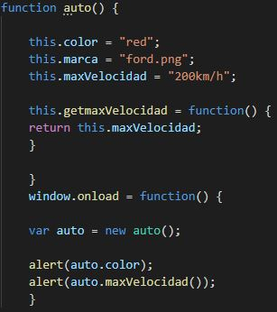
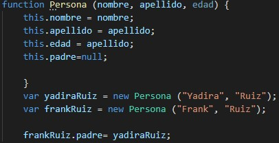
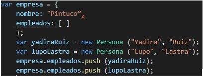
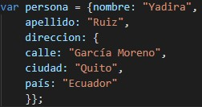
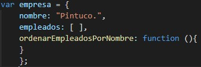
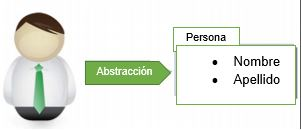
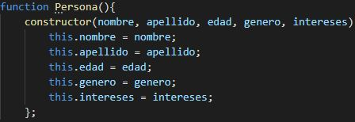
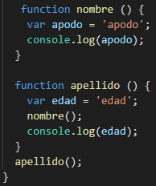

📜RESÚMEN DEL LIBRO MASTERING JAVASCRIPT OOP📜
Un lenguaje puede habilitar el desarrollo para describir la realidad utilizando objetos y define las relaciones entre los objetivos de un objeto.
La Programación Orientada a Objetos trata de modelar entidades, procesos y objetos del mundo real y representarlos en nuestro software.
◼️ La POO nos sirve para modelar objetos de la vida real.
◼️ Las cosas que se sabe son los atributos.
◼️ Las cosas que se hacen son los métodos.
◼️ La función cuando se pasa a un objeto se llama método.
Uno de los principios de la POO es la abstracción que se basa en el concepto de especificar los detalles e implementar una idea concreta de cosas a las características que son relevantes para un determinado propósito, con un enfoque general y abstracto. En otras palabras, la abstracción es la capacidad para definir qué propiedades y acciones de una entidad del mundo real tienen que ser representadas por medio de objetos en un software para resolver un problema en específico.
Modelar la realidad implica definir objetos con características relevantes que incluya la definición de relaciones entre objetos para un propósito.
⬛Abstracción
Son los métodos y propiedades que un objeto debe ser capaz de simular en un modelo de todo lo que exite en la vida real.
▪️Ejemplo:

⬛Asociación
Es la relación entre dos o más objetos donde cada objeto es independiente
el uno del otro. Esto significa que un objeto puede existir sin el otro y ningún objeto posee el otro.
▪️Ejemplo:

⬛Agregación
Es una forma especial de relación de asociación donde un objeto tiene un papel principal
que el otro. Por lo general, este rol principal determina un tipo de propiedad de un objeto en relación con el otro.
El objeto propietario se denomina agregado y el objeto propietario es denominado componente. Sin embargo, cada objeto tiene una vida independiente.
▪️Ejemplo:

NOTA: La agregación es un mecanismo que permite crear un objeto que consta de varios objetos, mientras que la asociación relaciona objetos autónomos.
⬛Composición
Es un tipo fuerte de agregación, donde cada objeto componente no tiene vida independiente sin su dueño, el agregado.
▪️Ejemplo:

Este código define a una persona con su dirección representada como un objeto. La propiedad de la dirección está vinculada a la persona objeto. Si se elimina el objeto persona, también se elimina el objeto dirección.
Estos son unos de los pilares más importantes para la POO:
◼️Encapsulamiento: Esconde la lógica, crea una estructura en un objeto y dentro del objeto.
◼️Polimorfismo: Se refiere a que tiene muchas cosas para hacer lo mismo, significa implementar la funcionalidad en varias formas. El mismo método puede ser implementado en el mismo método de distintas formas.
◼️Composición: Esta es la capacidad de programar un objeto de otros objetos.
◼️Constructores: Son métodos para crear e inicializar un objeto creado a partir de una clase.
◼️Clase: Define las características del Objeto.
◼️Método: Una capacidad del Objeto
SOPORTE DE LOS PRINCIPIOS DE LA POO.
JavaScript nos permite considerar como un objeto orientado el lenguaje que implica el apoyo de al menos tres principios: encapsulación, herencia y polimorfismo.
◼️Encapsulación
Es la capacidad de concentrar en una entidad ambos datos (propiedades) y funciones (métodos), ocultando los detalles internos (código).
El principio de encapsulación permite que el objeto exponga lo que se necesita para utilizarlo, ocultando la complejidad de su implementación.
▪️Ejemplo:

Crea un objeto empresa con un nombre, una lista de empleados y un método para ordenar la lista de empleados que usan su nombre de propiedad. Si necesitamos obtener una lista ordenada de empleados de la empresa, necesitamos saber que el método ordenarEmpleadosPorNombre (), realiza esta tarea.
◼️Herencia
Nos permite que nuevos objetos obtengan las propiedades de los objetos existentes.
La relación entre dos objetos es muy común y se puede encontrar en muchas situaciones de la vida real.
Por ejemplo, una persona: tiene algunas características como nombre, apellido, altura, peso, etc.
Este conjunto de características describe una entidad que representa a una persona usando la abstracción, podemos seleccionar las características necesarias para nuestro propósito y representar a una persona como un objeto:

▪️Ejemplo:

◼️Polimorfismo
Es la capacidad de manejar múltiples tipos de datos de igual manera, reduce el acoplamiento en nuestra aplicación y, en algunos casos, permite crear código más compacto. Las formas más comunes del polimorfismo incluyen:
• Métodos que toman parámetros con diferentes tipos de datos.
▪️Ejemplo:

◼️Encapsulación
Usa los métodos expuestos por el objeto para manipular los datos, la encapsulación oculta los detalles internos sobre cómo manipula el objeto sus datos. Esta característica, de ocultación de información, está relacionada con la encapsulación.
▪️Ejemplo:
